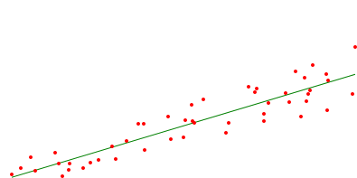
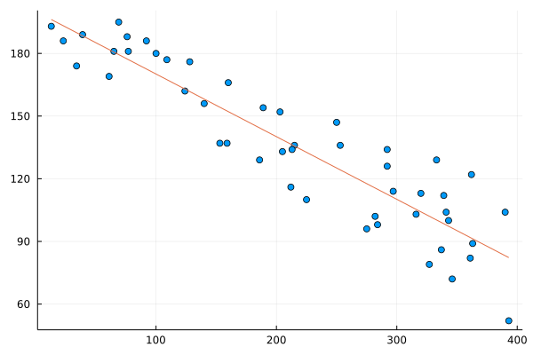
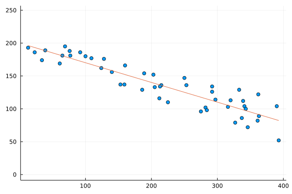

CY's Take on The Weekly Challenge #165
If you want to challenge yourself on programming, especially on Perl and/or Raku, go to https://theweeklychallenge.org, code the latest challenges, submit codes on-time (by GitHub or email).
Do tell me, if I am wrong or you strongly oppose my statements!
It's time for challenges in Week #165 !
Task 1: Scalable Vector Graphics (SVG)
Task 2: Line of Best Fit



Stay alert and healthy! □
Except from images and codes from other personnels, the content of this blogpost is released under a copyleft spirit. One may share (full or partial) content of this blogpost on other platform if you share it under the free and open content spirit.
link for CY's full codes: ch-1.pl, ch-2.pl, ch-2.jl
Contact on twitter: @e7_87.
Discuss via GitHub issues: here.
Email: fungcheokyin at gmail.com
Created Date: 17th May, 2022.